Books
2026
The Fractalist
2026-047
迷幻蘑菇
2026-046
輪到你了
2026-045
無敵合作
2026-044
The Reverse Centaur's Guide to Life after AI
2026-043
我看到的世界跟你不一樣
2026-042
ㄜ 都是正面溫馨 讓人覺得像迪士尼樂園
Skin in the Game
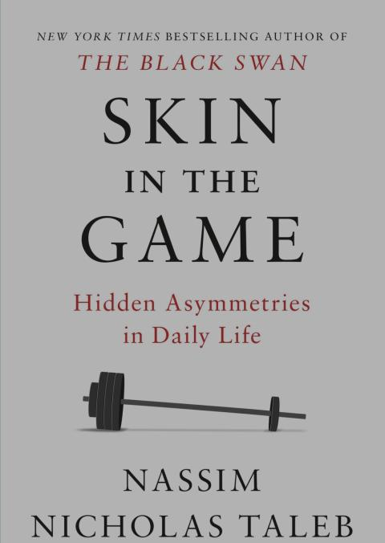
2026-041
Incerto 系列 除了語錄外 又看完一遍了 這套書是我 這輩子少數 會一讀再讀的書
用界線讓孩子放下手機
2026-040
Antifragile
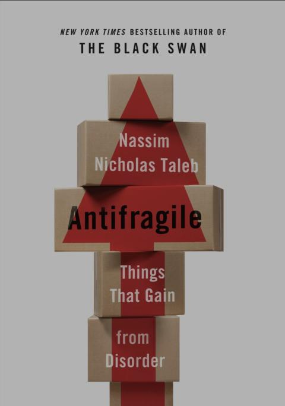
2026-039
The Black Swan
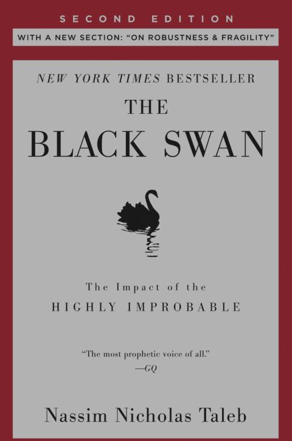
2026-038
Fooled by Randomness
2026-037
Deep C Dives Adventures in C
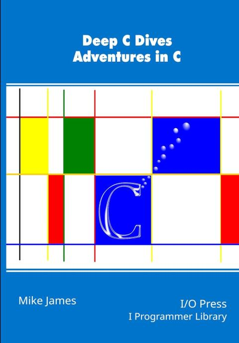
2026-036
Fundamental C: Get Closer to The Machine

2026-035
Hands-On FPGA Projects

2026-034
Make Sense of Chaos

2026-033
Verilog FPGA Programming

2026-032
Google NotebookLM

2026-031
A World Appear

2026-030
True, World is Create from Consciousness.
Logic Before Language

2026-029
Well, logic is based on language.
This book is as verbose as an llm.
And the RTR stuff is also just words.
Inflation

2026-028
The Law of Thought

2026-027
A Simple Approach to Neuroscience

2026-026
Circuit In The Brain

2026-025
沒看完 中間lost track 變得很難閱讀下去
The Essential Book of AI

2026-024
The Developer's Guide to AI
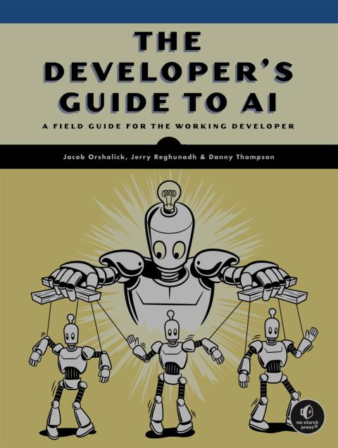
2026-023
The Brain, In Theory
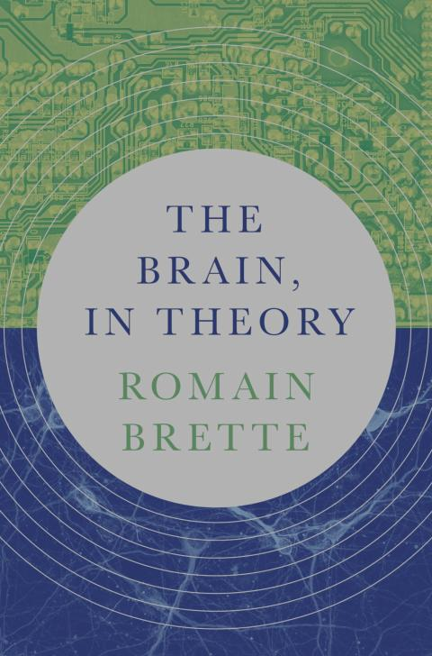
2026-022
Introduction C++
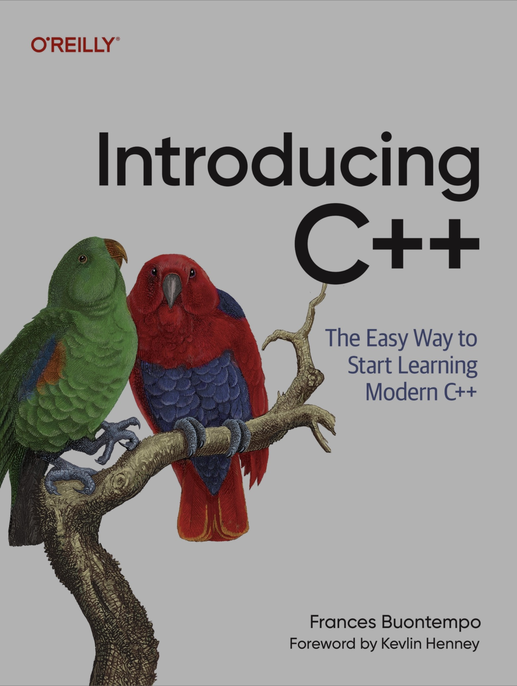
2026-021
Modern C (C23)
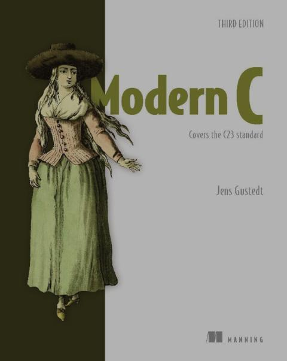
2026-020
長大後 交朋友怎麽那麽難
2026-019
Defensive C++ Arduino Programming

2026-018
I like reading stroy about C language.
Pragmatic C++ Arduino Programming

2026-017
Causal Inference

2026-016
The Causal Mindset Handbook

2026-015
The Pattern On the Stone

2026-014
The Delicate Art of Brute Force

2026-013
Mental Models for Critical Thining
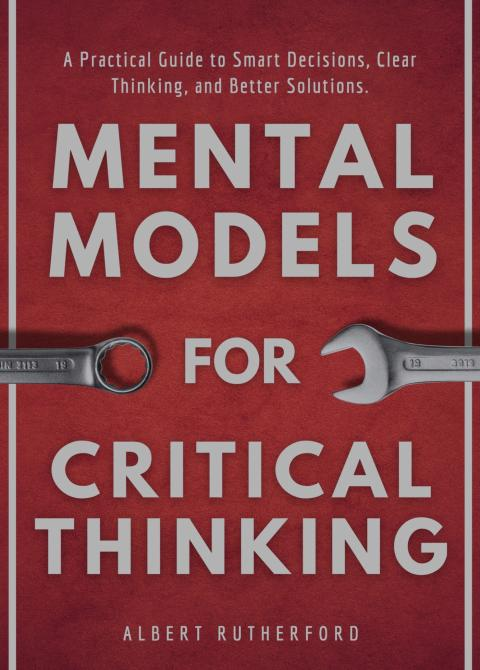
2026-012
The Idea Factory
2026-011
沒有 Bell Lab 我大概在台東種田
High Level Sythesis Make Easy
2026-010
Master Embedded Linux Development
2026-009
C++23 Coroutines
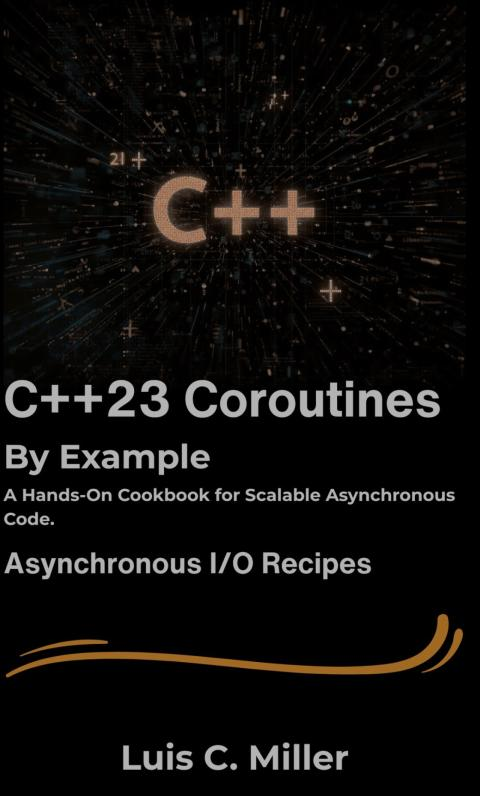
2026-008
The MicroZed Chronicles
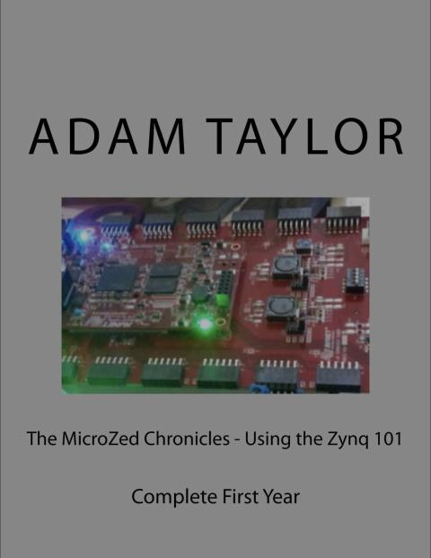
2026-007
FPGA for Developers
2026-006
Synaptic Self
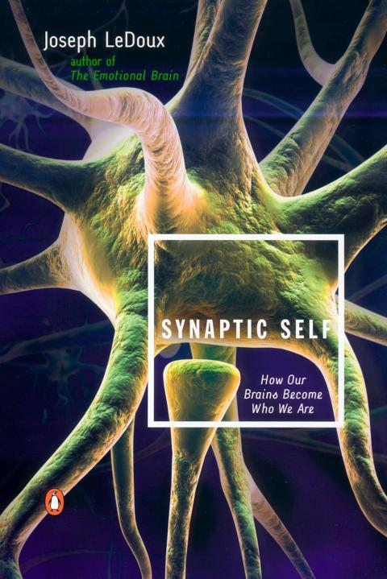
2026-005
The Little Book of Stoicism
2026-004
Creative Thinking Field Guide
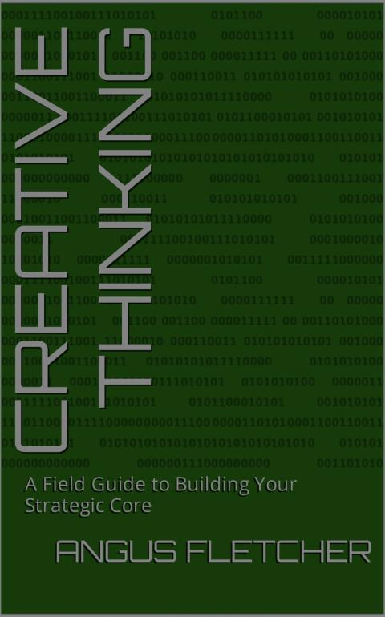
2026-003
Kluge
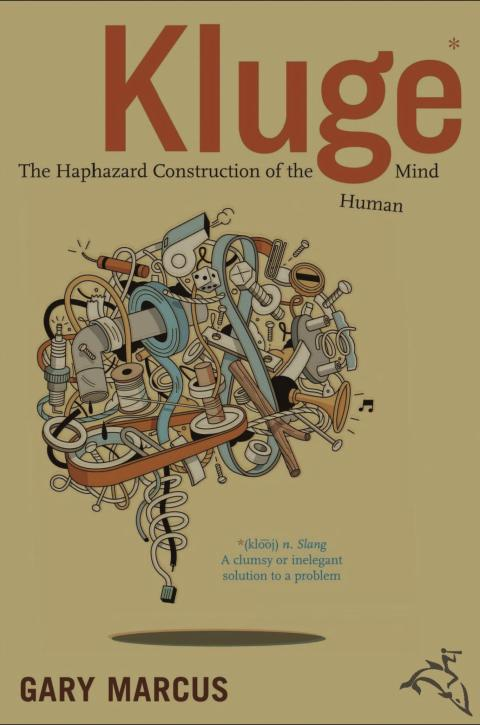
2026-002
Primal Intelligence
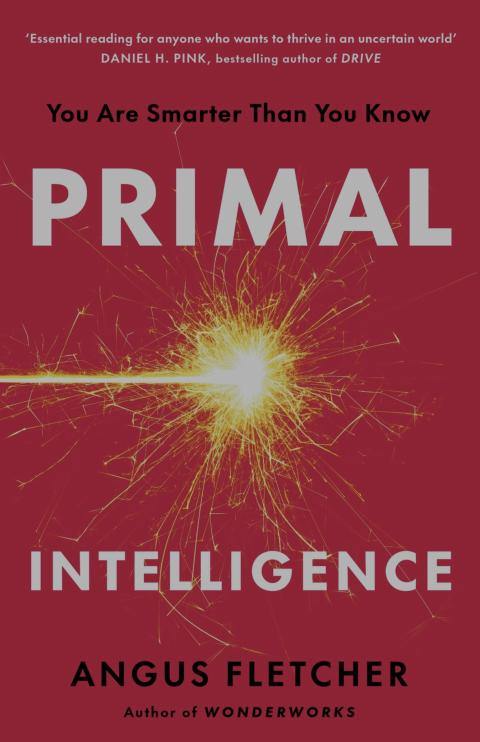
2026-001